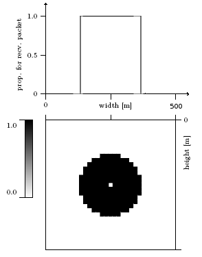
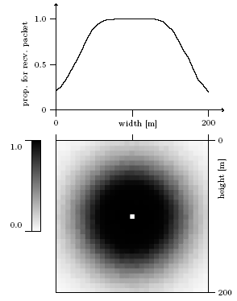

Table of Contents
Laboratorul 4
Modelul Two Ray Ground
Cercurile de comunicare și de CS sunt definite în putere(W), care corespunde unei distanțe(m).
set opt(prop) Propagation/TwoRayGround; Phy/WirelessPhy set CSThresh_ 1.55924e-11 ; #550m - exact Phy/WirelessPhy set RXThresh_ 3.65262e-10 ; #250m - exact Phy/WirelessPhy set CPThresh_ 10.0 ; #captura, în dB
În acest exemplu la 251m nu se primește nici un cadru, deși la 250m se primesc toate. Două noduri aflate sub 550m își cedează reciproc accesul când este cazul, adică nu-și sunt terminale ascunse unul altuia. Captura este atunci când într-o coliziune se poate recupera cadrul mai puternic, dacă acesta e cu 10dB mai puternic.

Modelul Shadowing
set prop Propagation/Shadowing; Phy/WirelessPhy set CSThresh_ 1.55924e-11 ; #550m - probabilistic Phy/WirelessPhy set RXThresh_ 3.65262e-10 ; #50m - probabilistic Phy/WirelessPhy set CPThresh_ 10.0 ; #captura # parametri specifici modelului $prop set pathlossExp_ 2.7 $prop set std_db_ 2.2 $prop set dist0_ 1.0

Se dă scriptul shadow2.tcl care folosește 802.11b, MCS=2Mbps cu modelul shadowing și definește următoarea topologie: S1–dist–D1 …10000m … S2–dist–D2. Scriptul acceptă parametrii -dist pentru a seta distanța sursă-destinație, și -tries pentru a seta numărul maxim de încercări. Cele două perechi nu se influențează reciproc din cauza distanței mari, iar S1→D1 folosește UDP, în timp ce S2→D2 folosește TCP. Practic se rulează două experimente pentru aceeași distanță de comunicare, si acelasi regim de retransmisii. Scriptul afișează debitul în bps obținut de cele 2 fluxuri, dar generează și fișierul shadow2.tr care poate fi analizat pentru a contoriza pachetele în diverse ipostaze.
Plan de organizare a datelor intermediare
- citiți toate cerințele din secțiunea Taskuri de mai jos înainte de a decide un plan de măsurători. Strategia optimă este de a extrage mai mulți parametri în urma unei simulări pentru a putea răspunde mai multor cerințe. Exemple: apariții unice ale unui nr de secvență cbr la emisie/recepție MAC, total cadre cu cbr emise/primite la MAC, thruput UDP, thruput TCP, etc.
- decideți structura fișierului text care va conține datele din care se pot produce graficele cerute.
- ce avem pe axele x, y?
- ce reprezintă fiecare coloană?
- ce parametri se pot obține ca o funcție de coloane? Exemplu $probabilitate_{livrare} = primite/trimise$
- ce grafice au axe care nu corespund direct unoar coloane din fișierul generat? cum se pot obține acele axe?
- prelucrați ieșirile simulatorului (stdout sau fișierul de trace) pentru a obține un fișier text de date intermediare cu semnificații clare pentru linii și coloane. Exemplu: fiecare linie e pentru o distanță, fiecare coloană e un counter de cadre sau un debit în Mbps
- plotați interactiv datele intermediare. Unele grafice sunt o simplă dependență a două coloane (de exemplu Thruput(distanță)). Pentru combinații de coloane, gnuplot acceptă sintaxa
> plot “date” using 1:($3*100.0/$5) with …adică axa y este raportul coloanelor 3 și 5 în procente, iar axa x este coloana 1. Nu vă preocupați de partea estetică a graficelor (etichete, legendă, culori, etc).
Taskuri
- analiză: dacă probabilitatea de livrare la nivel fizic este p, cât este la MAC, după r încercări? 1)
- plotați packet delivery ratio la nivel fizic (tries=1) și la nivel MAC (tries=4,10) pentru distanțele 50m-250m 2). Comparați cu imaginea de mai sus care prezintă spațial probabilitatea de recepție
- se analizează fișierul trace doar pentru traficul cbr
- tries=1 înseamnă că fiecare cadru este încercat o singură dată
- pentru tries>1, trebuie numărate cadrele unice emise și primite la nivelul MAC. Atenție, această statistică nu poate fi obținută la UDP
- în trace, la coloana 47 se află câmpul cbr sequence number, unic per pachet original emis de udp/cbr.
- exemplu de calcul al numărului de cadre unice emise
unqsent=$(cat shadow2.tr | grep MAC | grep '^s' | grep cbr | awk '$3 <= 25.0 {print $47}' | uniq -c| wc -l) - comparați în câteva puncte cu formula din analiză
- se poate spune că reîncercările cresc distanța de comunicare?
- plotați capacitatea obținută de UDP pentru tries=1, 4, 10 la distanțe 50-250m. Justificați relația cu graficul de la punctul precedent. 3)
- plotați capacitatea obținută de TCP pentru tries=1 la distanțe 50-250. Justificați relația cu graficele precedente.
- de ce la tries=1 (nu se reîncearcă), TCP nu atinge capacitatea maximă chiar când canalul este perfect, de exemplu la 10m?
- Analizați pachetele pierdute în trace, și justificați folosind timpii de emisie ai pachetelor.
- activați RTS/CTS pentru acest caz(tries=1, loss=0). De ce nu se îmbunătățește situația TCP-ului?
- plotați capacitatea obținută de TCP pentru tries=4, 10 la distanțe 50-250. Explicați diferențele față de comportarea UDP în același setup 6)
- dorim exprimarea capacității UDP și TCP ca funcție de rata de livrare la nivel fizic
- axa x: PDR la nivel fizic se poate obține cu UDP cu tries=1 scalat la capacitatea maximă (1.7Mbps), sau ca raport între numărul de cadre recepționate si emise la nivel MAC.
- axa y: debit în Mbps obținut de TCP cu tries=1, 4, 10. 7)
- același grafic pentru UDP 8)
- tries=1 este best case pentru UDP și worst case pentru TCP?
- tries=1 de ce TCP nu obține debit maxim, chiar în condiții optime (livrare 100%)?
- de ce scade capacitatea UDP când crește numărul de încercări? 9)
- Scripturile folosite și graficele obținute sunt disponibile în Media Manager/ Rezultate